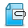

登录安全
不必担心帐号密码被盗,我们提供登录身份认证,让您享受网银级别的安全保障.


传输安全
采用128/256位SSL加密（与银行同等安全级别），保证数据在传输过程中的全程安全
存储安全
电信级硬件防火墙，配备入侵检测系统（IDS）及入侵防御系统（IPS），有效防止跨站脚本和SQL注入攻击。专业运维团队定期安全审计，把可能的漏洞、入侵隐患降到最低
灾备安全
异地容灾和自动备份，保证客户数据的高可用性及系统持续稳定运行。
管理安全
所有机密数据均密文存储；运维人员无权访问客户数据。